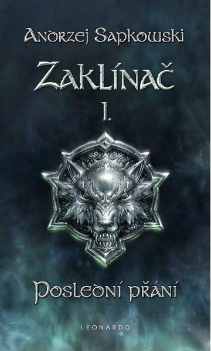
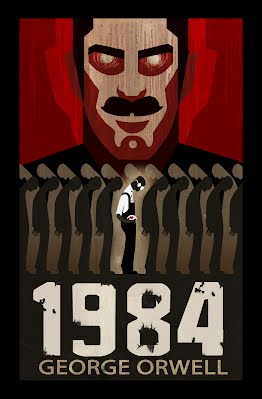

Zaklínač Poslední přání
autor: Andrzej Sapkowski
Nově přeložené geraltovské povídky ze Stříbrného meče, něco z Věčného ohně a Meče osudu & kompletní povídka Hlas
rozumu, kde Geralt vysvětluje, jak to všechno začalo.
Zaklínač, ošlehaný muž bez věku, jehož bílé vlasy nejsou znakem stáří, ale mutace, kterou musel podstoupit.
Placený i dobrovolný likvidátor prapodivných tvorů: mantichor, trollů, vidlohonů, strig, amfisbain – pokud ovšem
ohrožují lidský rod; v takovém případě zabíjí i bytost zvanou člověk. Prvotřídní, skvělý bojovník, který není
neporazitelný ani nezranitelný – naopak, téměř z každého dobrodružství si odnáší další šrámy na těle i na duši.

1984
autor: George Orwell
WINSTON SMITH provede v dubnu 1984 něco nepřípustného. Ve válečných podmínkách Oceánie drcené krutovládou jedné
Strany si začne psát deník, kterému svěřuje pochyby, jež ho už léta mučí. Úředník londýnského Ministerstva pravdy,
kde se retušují, falšují či přímo likvidují dějiny, však ve svých zápiscích obtížně hledá srovnání s dřívějšími
normálními časy, jejichž útržky doluje ze zasutých vzpomínek, dennodenně atakovaných přívalem propagandistických
žvástů. Je snad jediný, kdo si v téhle zemi zachoval zdravý rozum a paměť? Opravdu kdysi zahlédl něco, co
představuje zásadní trhlinu ve fazoně Velkého bratra, z jehož všeobjímající náruče není úniku? Ve zrůdném,
avšak svým způsobem dokonalém totalitním režimu je Winstonova touha po špetce nezávislosti možná předem odsouzena
ke zmaru… Zcela nový český překlad nejslavnější antiutopie míří ke generaci, jež už krutý a posléze groteskní
komunistický útlak nezažila. Kniha, již autor dokončil v roce 1948, ukazuje s prorockou jasnozřivostí smrtelné
nebezpečí ideologie zaštiťující se všeobecným dobrem, když žádá, aby se s ní lidé zcela ztotožnili. Fanatici a
mocichtiví oligarchové stále číhají na příležitost. Stačí, když na chvíli přestaneme dávat pozor.
